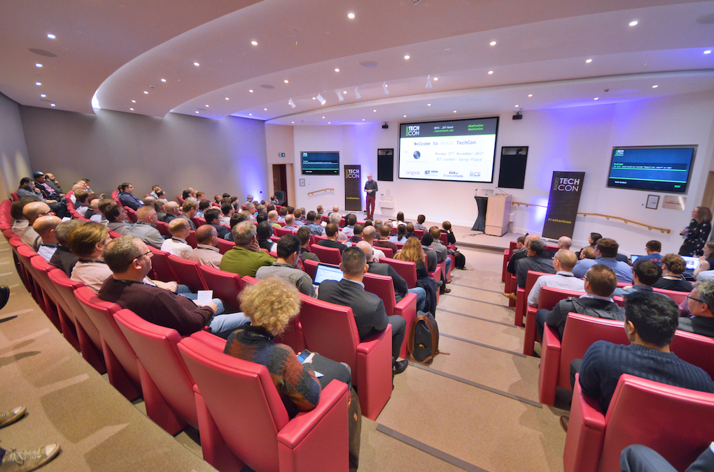
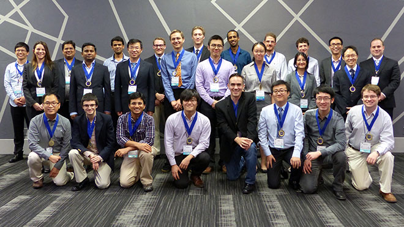
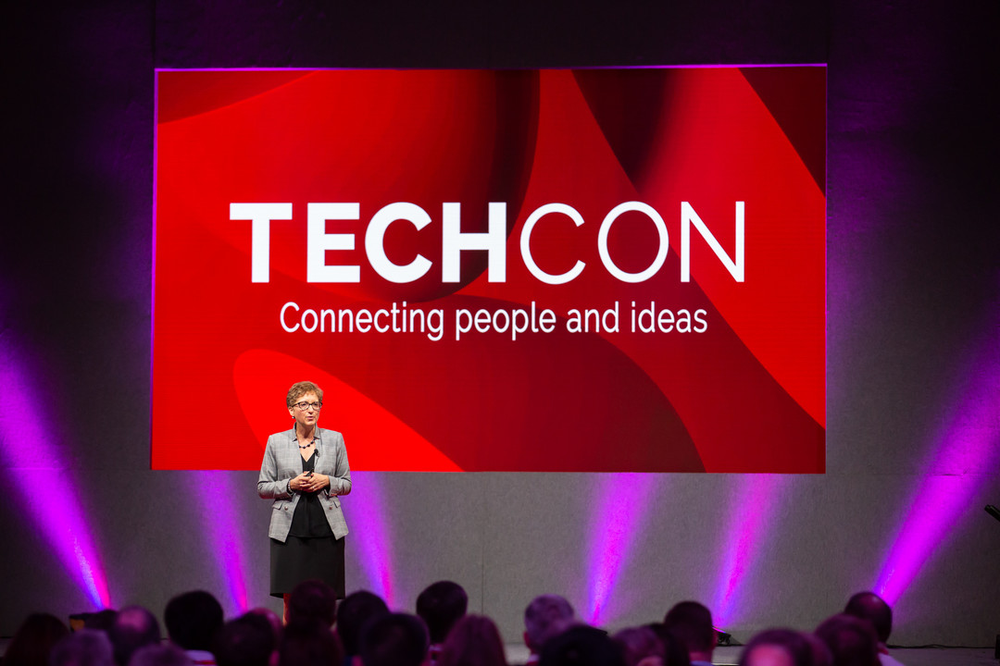

History
TechCon began in 2010 as a small meetup for software engineers.
Over the years, it has evolved into a global conference attracting thousands of inventors , startups
students and industry leaders.

The very first TechCon event in 2010, held in a small co-working space.

By 2020, TechCon had grown into a massive international event.
Mission
TechCon's mission is to accelerate Africa's digital transformation by creating a platform where stakeholders from various industries can learn, collaborate, and innovate using emerging technologies.

The driven principle of TechCon
Past Speakers
Chris Dornfeld is an experienced executive, entrepreneur and designer helping companies realize the greates value from their most valuable assest.
His love for mentoring young leaders fit so well with TechCon and this has helped build TechCon.
Belkofer_Alex speaker at TechCon 2015
Belkofer_Alex is international speaker on leadership, and his selfles lectures has helped shaped TechCon.